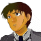

ナレーション 「時に宇宙世紀２５６年。支配層と被支配層の争いは熾烈を極めた。その戦いの中で、多くの戦士達が死に、そして生き残った者たちは、新たなる戦いの舞台となる地球へと降り立った」
 イブレイ 「なッ・・・んだとォ！？」
イブレイ 「なッ・・・んだとォ！？」

兵士 「ちょっ、長官」
イブレイ 「スポンサーの馬鹿どもめ、トラヴィス基地から兵の移動を強要している・・・っ」
兵士 「基地を破棄して・・・、防衛に当たれ？」
イブレイ 「連中、金は腐るほど持ってる。金さえあれば基地などいくつでも作れると・・・っ」
兵士 「しかし、スポンサーなくしては・・・その、逆らえませんし・・・」
イブレイ 「戦力を一箇所にまとめるならそれでもいいっ！ それを・・・ッ！ 我を我をと・・・っ！」
 パーチ 「長官どの」
パーチ 「長官どの」
イブレイ 「貴様っ」
パーチ 「今の話について、提案がある」
イブレイ 「・・・なに？」
タイトル
|
− It tolls for thee − |
 テリー 「は。補給は終わったんだろ。次の作戦はまだかい」
テリー 「は。補給は終わったんだろ。次の作戦はまだかい」
 ケネス 「慌てんな。連中は慌てまくってる。本来なら防衛範疇になかったスポンサーを守らなきゃならねえからな」
ケネス 「慌てんな。連中は慌てまくってる。本来なら防衛範疇になかったスポンサーを守らなきゃならねえからな」
テリー 「その防衛ラインが出揃う前に叩くべきなんじゃねえの」
ケネス 「いや、相手は戦力の増産が難しい状況だ。戦力は集中させるだろうよ。ハズレを引かない限り、もぬけの殻になってる軍事施設を叩けるって寸法だ」
テリー 「へ。俺ら遊撃隊の所在がバレない限り、焦らした方が得策か」
ケネス 「そういうコト。それに、エクレシアも続々と地球へと降下してる。最後はお互いの総力戦になる」
テリー 「へ。宣伝効果も兼ねて、ね」
イブレイ 「貴様と、もう一人・・・」
パーチ 「そうだな・・・。バーナバスがいい」
 バーナバス 「ご指名感謝するぜ」
バーナバス 「ご指名感謝するぜ」
パーチ 「他は、テキトーなのを見繕ってくれれば、何でも構わない」
イブレイ 「・・・それで、どうする気だ」
パーチ 「リアージュ、あるんだろ。アレを使う」
イブレイ 「超長距離射撃砲か。あるにはあるが・・・」
パーチ 「要するに、Ｇの中でも、厄介なのは奪われたアサルト・・・いや、アベルの存在だ。チェスで言えばクイーンに相当する」
バーナバス 「ケネスも厄介だが、アベルほどではない、か」
パーチ 「どうにか上を説得して、俺とバーナバスを残してくれ」
イブレイ 「具体案を聞こう」
パーチ 「基地の周り３６０度全てに有線フロートを配置。距離は２００Ｋｍでいい。方角が判明次第、俺がアサルトを狙撃する。それだけだ」
イブレイ 「馬鹿な」
バーナバス 「俺は？」
パーチ 「ケネス達の相手をしてくれればいい。俺を狙撃に集中させてくれ」
バーナバス 「へへ、簡単に言うねェ」
パーチ 「落とせとは言ってない」
イブレイ 「出来るのか？」
パーチ 「さあな。それでも、悪い賭けじゃないと思うぜ」
バーナバス 「リアージュ・・・、一時期はビームシールドごとぶち抜けばいいってな発想でマシンにも積んだらしいが・・・」
パーチ 「ここならエネルギー残量の心配はない。再接近までの残された時間が勝負。もとより、アーバレストじゃ、接近戦じゃ勝てない」
イブレイ 「いいだろう・・・。貴様に賭ける」
 イヴリン 「パーチ・・・、あんた、この作戦」
イヴリン 「パーチ・・・、あんた、この作戦」
パーチ 「無茶か？」
イヴリン 「無茶とは言わないけど・・・」
パーチ 「ゲーム・・・、ＤＳ９って知ってるか？」
イヴリン 「ＤＳ・・・、ああ、なんか人気の戦争ゲーム・・・それが？」
パーチ 「ゲームキングなんだよ。俺、あれの」
イヴリン 「へえ」
パーチ 「２位に大きく水をあけてのトップ。全宇宙でだ」
イヴリン 「そのチャンピオンなら勝てるって？」
パーチ 「いや、アベルにやらせて見たんだよ。遊んでやるつもりでな」
イヴリン 「結果は聞きたくないわね」
パーチ 「キリのいい所で１０戦。俺が４敗だ。何のジョークかと思ったよ。最初の１敗は気を抜いてたけど、そこからは本気で負けた」
イヴリン 「相手が悪過ぎるわね」
パーチ 「勝ちたいんだよ。あいつに」
イヴリン 「意地？」
パーチ 「１対１。こっちは狙撃。このアドバンテージで負ける訳には行かない」
イヴリン 「勝ちを、祈っとくわ。それで、バーナバスは？」
パーチ 「かなり頭に来たらしいな。先に移動するって言ってたぜ」
テリー 「おう、アベル」
 アベル 「何ですか？」
アベル 「何ですか？」
テリー 「ここでは新入りだけどな。経験上の先輩として言っとくぜ」
アベル 「はい」
テリー 「お前さん、敵兵と言えども殺したくない。だからコックピットの直撃は避けてるだろ」
アベル 「ええ。出来る限り、ですけど」
テリー 「お前さんがそれをやれるだけのスーパーマンって事は認めた上で言う。こっから先、生き延びたきゃ、撃て」
アベル 「その、お言葉を返すようですけど、その、それは、違います」
テリー 「あン？」
アベル 「その、うまく言えないけど、ええと、テリーさんは何のために戦ってます？」
テリー 「あ？ そりゃ、おめえ、俺は、お前らと違って金のために働いてるんだよ」
アベル 「だから、成功率の高い方に賭けろっておっしゃってくれてるんですよね」
テリー 「おお、そうだ」
アベル 「その、僕は、人の命を奪ったりしたくない世界を望んで・・・、なんて言うか、そのために人の命を奪うのは本末転倒と言うか・・・、その・・・」
テリー 「だから、目的じゃなく、手段の話をしてンだよ」
アベル 「そのっ、僕は、殺したりしたくないんです。だから、その、僕がコックピットを狙ったら、それこそ、きっと成功率が下がっちゃうんです」
テリー 「は・・・」
ケネス 「くっ、ははは。そりゃ正しいな。アベル、お前が正しいわ」
アベル 「いえっ、あの、ご忠告有難うございますっ」
テリー 「は。俺には理解できねえが、お前さんがそう言うならそれでもイイだろうよ」
アベル 「す、すみません・・・」
ケネス 「アベルの奴、変わったな」
テリー 「そーかい？ 俺には変わらねえ甘ちゃんに見えるけどな」
ケネス 「いンや、ただの甘ちゃんから、筋の通った立派な甘ちゃんに成長してる」
テリー 「は。そーゆーモンかね」
イブレイ 「パーチ、貴様の作戦に賭ける。だが、バーナバスは使えん。上からの命令だ。貴様一人でやれるか？ 無理ならばお前も移動しろ」
パーチ 「やりますよ」
イブレイ 「無能な上官と笑うか」
パーチ 「いや、あんたも随分と掛け合ったんだろ。アーバレストを残してもらえるだけ有難い」
イブレイ 「ふン。準備は始まってる。お前も急げ」
パーチ 「了解」
イブレイ 「・・・悪いな。無能な上官で。これさえも保険付きだ」
パーチ 「リアージュの操作はこっちでやる。基地の砲台はこの棟以外オートにしてくれ」
 兵士 「ここはいいんですか？」
兵士 「ここはいいんですか？」
パーチ 「ここは全部こっちで動かす。コックピットは閉めるな。端末を繋ぐ」
兵士 「それで、この分厚いシールドは？ 偏光領域は完璧ですよ」
パーチ 「最後のとっておきだ。黙って設置してくれ」
兵士 「でも、設置方向が逆ですよ」
パーチ 「それでいい。設置してくれ」
兵士 「は、はい」
アベル 「アベル、ギルティ。出ます！」
ケネス 「ケネス、サイファー。出るぜ！」
テリー 「ヴォーテックス。行くぜ！」
ケネス 「さあて、もぬけの殻になってるコトを祈るがな」
テリー 「ま。楽に越した事はねぇやな。っと」
ケネス 「有線フロートッ？」
アベル 「来ます！ 散開してッ」
ケネス 「超長距離射撃・・・ッ」
パーチ 「ちぇっ、あとコンマ５秒早ければ勝ってたのにな」
パーチ 「初弾でケリを付けるのがスナイパーとしては理想だったんだけど・・・。そこまで甘くはないか。始めるぞ」
アベル 「今の、破壊力が尋常じゃありませんよ。分かれて接近しましょう」
ケネス 「っと、予測済みっぽいぜ」
テリー 「おお、乱射と狙撃のセットかよ」
ケネス 「テリー、変形して近付けるか？」
テリー 「無理」
ケネス 「なら、回り込んで弾を散らせ」
テリー 「了解した」
アベル 「パーチさん・・・」
ケネス 「どうやら、アベルのみが狙いか・・・。アベル。悪いが任せたぜ、俺が接近する」
パーチ 「さすがに１対３は・・・。ッ！？」
ケネス 「おいでなすったか」
バーナバス 「悪いけどよ。お前だけに美味しいポジションってのはご免だ。相棒」
パーチ 「バーナバス・・・、ケネスは任せたぜ、相棒」
イヴリン 「言ってくれれば、あたしも行ったのに・・・。あの馬鹿だるま」
バーナバス 「ケェネェェェスッ！ 決着をつけようぜ」
ケネス 「思わぬところで大決戦ってな」
パーチ 「来いよ、アベル。必ず撃ち落す」
アベル 「行きます。僕が！」

アイキャッチ「Ｇ−ＧＵＩＬＴＹ」
アベル 「そっちが狙撃なら、こっちだって！」
パーチ 「対策済みだよ。アベル」
アベル 「偏光領域！？ 撃つ側は集束するように計算されてるとしても、ピアシング・レーザーまで曲げるの！？」
パーチ 「悪いが、お前が怖いんでね」
アベル 「もっと近付かなきゃ！ 的にされるだけだ！ 少しでも広角に動いて・・・っ！ けど・・・ッ」
パーチ 「大気圏での２００ｋｍは遠い。まして、マシンの最高速度では・・・」
アベル 「何十分とかかる・・・っ」
パーチ 「さあ、いつまで避け続けられる？」
ケネス 「ちッ！ 対策は万全ってか」
バーナバス 「ヘイヘイ！ よそ見してる余裕はねえぞ！」
ケネス 「テリーは・・・っ」
テリー 「へ。俺に期待すンなよ。自動砲台がいくつあると思ってんだ？ 一個一個潰したって、これじゃ何時間掛かるか・・・」
テリー 「これ以上速度を上げたら弾が避けられねえ。外堀を埋めるまで耐えてもらうか・・・。悪いね」
アベル 「ＤＲＥＳＳを使えば一気に・・・、駄目だ。遠過ぎる」
パーチ 「お前の最大の武器、ＤＲＥＳＳだと、大気圏内じゃ速度も時間も足りないだろ」
アベル 「くっ、射撃角が小さいと狙い撃ちにされる・・・。少しずつでも近付くしか方法がないの！？」
パーチ 「お前なら、そう簡単に当たりゃしないさ。だが、お前でも、じわじわ近付くしかない中で、俺の狙撃を何分かわせる？」
アベル 「それでもっ！ それしかないなら！」
パーチ 「それでいい・・・。１パーセントでいい。１パーセントでも当たるなら、何百と撃つまで・・・ッ」
アベル 「それなら・・・ッ」
パーチ 「ちッ、気付いたか」
アベル 「当たっちゃ駄目なのは主砲だけです！ 決定打以外はシールドで受けます！」
パーチ 「さすがっ！ なら、こいつだ！」
アベル 「ミサイル！？ そんなものっ！ 斬り落とせば！」
パーチ 「やる・・・っ！ だが、それでも時間が短縮されただけだ。こっちの有利は動かない」
アベル 「立てこもるなら、切り崩すだけです！」
パーチ 「させない」
アベル 「っ！？ ビームを曲げた！？ あの時の武器か！」
パーチ 「なかなか・・・っ！ 今のは当てられると思ったんだけどな。だが、こいつなら！？」
アベル 「退きませんよっ！」
パーチ 「曲げ返すかよ！」
テリー 「っひょオ！ やるね、アベル。ま。こっちはこっちの仕事を淡々とこなさせてもらうぜ」
ケネス 「不利には違いないが、絶対的有利も崩れたぜ」
バーナバス 「戦局を気にしてる余裕があるたァな。舐められたモンだぜ」
ケネス 「舐めちゃねぇよ。実力差があるだけ・・・ッ」
兵士 「リ、リアージュの砲身が持ちませんよ！」
パーチ 「いいんだよ。あのラインを割るまで持てば。あれを割ったら砲座の射角が追いつかない」
アベル 「シールド・・・っ、くっ、ディバイダーがっ！ あと少しなのに・・・っ」
パーチ 「さあ、いよいよ後がないぜ。俺も・・・、お前も」
アベル 「ここさえ、ここを抜ければ・・・っ」
パーチ 「さあ、来い。この領空で決着だ」
アベル 「行ける！」
パーチ 「来い！」
アベル 「上！？」
パーチ 「下だよ。終わらせる！」
パーチ 「爆煙の中で、こいつをかわしてたら、俺の負けだった・・・。・・・ッ！？」
パーチ 「ＤＲＥＳＳ！？」
アベル 「わああああっ！」
パーチ 「突破、された？」
アベル 「ＤＲＥＳＳがなければ、パーチさんの勝ちでしたよ」
パーチ 「こいつは・・・俺の負け、だな」
バーナバス 「パアアアァァチッ！」
ケネス 「戦況を気にしてる余裕があんのかい！？」
アベル 「パーチさん、降伏してください。この距離では負けません」
パーチ 「残念だが、それは出来ない相談だ」
アベル 「何でです！？ もう勝負はついたんです！」
パーチ 「保険を掛けておいた」
アベル 「何の、話です？」
イブレイ 「抜かれた、な。仕方あるまい。・・・やれ」
パーチ 「これでいい」
アベル 「壁！？」
テリー 「基地を・・・っ」
バーナバス 「爆破・・・っ！？」
ケネス 「自爆、だとっ！？」
イヴリン 「道連れ・・・！？ まさか、最初っから・・・ッ！？」
バーナバス 「馬鹿なっ！？ 聞いてねえぞォ！ パーチっ！」
ケネス 「てめえ！ そこまで！」
バーナバス 「知るかっ！ クソっ！」
テリー 「どうにも後味は悪いが、仕事はさせてもらう」
バーナバス 「ちッ！ ヴォーテックス！」
ケネス 「降伏しな。逃げ場所もない。Ｇ２機を相手にする程お前も馬鹿じゃないだろ」
ケネス 「さ。手は後ろのままで頼むぜ」
バーナバス 「はン。煮るなり焼くなり好きにしろって」
ケネス 「お前さんが食えない事は・・・」
テリー 「アベル！？」
ケネス 「なに？」
バーナバス 「っ！」
テリー 「ちっ！」
バーナバス 「いきなり撃つか・・・、普通・・・」
テリー 「すまねぇ・・・。咄嗟に・・・」
バーナバス 「痛え・・・」
ケネス 「動くお前が・・・」
バーナバス 「・・・・・・」
ケネス 「・・・バーナバス」
アベル 「・・・バーナバスさん」
アベル 「・・・これって、勝ったん・・・ですよね」
ケネス 「ああ」
アベル 「パーチさんが、守ってくれました・・・。これでいいって・・・」
ケネス 「ああ」
アベル 「こんなの・・・ないですよ・・・」
ケネス 「・・・ああ」
アベル 「こんなのないですよね・・・」

ナレーション 「セツルメントへの侵入を果たしたアベルを待ち受けていたのは、正規軍と絶望的な状況で戦うゲリラだった。ゲリラに残された希望は、予言の告げる救世主しかない。アベルはその救世主と成り得るのか。次回、『Ｇの再来』 Ｇの鼓動が、今目覚める」